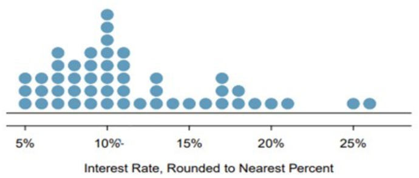
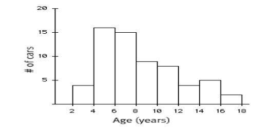
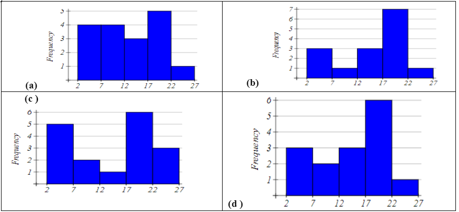
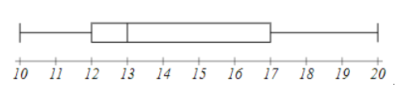

1.2 Summarizing Numerical Data
1.2.1 Objectives
By the end of this unit, students will be able to:
- Summarize and describe numerical data using various visual displays including histograms and dotplots.
- Idnetify skewness in the distribution of numerical data.
- Use summary statistics such as mean and median to describe central tendancy of the data.
- Use summary statistics such as variance, standard deviation, and quartiles to describe variability of the data.
- Identify potential outliers in the data using boxplots.
1.2.2 Overview
Summarizing Numerical (Quantitative) Data
Recall: Variables for which computation of measures like the mean (average) or standard deviation are meaningful are numerical variables.
Measuring Central Tendancy
Measures of Central Tendency (Averages): The mean and median both attempt to measure the center of a dataset.
The mean of a set of observations is the traditional average. We typically denote the mean by \(\bar{x}\) (or \(\mu\) in the case of population-level data) and it is computed as follows: \(\bar{x} = \frac{\displaystyle{\sum_{i=1}^{n}{x_i}}}{n} = \frac{x_1+x_2+x_3+...+x_n}{n}\)
The median is the middle value for a set of observations. To compute the median, list the numbers in ascending order and find the number or number(s) in the middle of the list. In the case that there is a single middle number, that is the median. In the case where there are two middle numbers, we take the mean of those two.
Aside: Defining my own data
For data which is not already known to R (ie. data which is not part of a data frame), we can still use R to quickly perform compuations. Consider the distributions of doors knocked on by two political campaign workers last week (Monday - Friday): \(\begin{array}{lcl} \text{Worker A} & : & 23,~24,~25,~26,~27\\ \text{Worker B:} & : & 0,~15,~25,~35,~50\end{array}\). We do this below with the help of the c() function in R, which can be used to create lists of values.
Measuring Spread
Measures of Variability: Clearly, the center of a dataset doesn’t tell the entire story. Our two political pollsters obviously have very different door-knocking strategies but both have a mean (and median) of \(25\) doors per day. We should also measure the spread of data.
The standard deviation of a set of observations is denoted by \(s\) (or \(\sigma\) in the case of population-level data) and is computed as follows: \[s = \sqrt{\frac{\displaystyle{\sum_{i=1}^{n}{\left(x_i-\bar{x}\right)^2}}}{n-1}}\] We should also note that if you are certain that you are working with population-level data, then the denominator used to compute the standard deviation should be changed to \(N\) (the population size). We can do this because there is no uncertainty in estimating the population standard deviation if we have records from every element of the population.
Explaining the Standard Deviation Formula: The standard deviation seeks to measure an “average deviation” from the mean.
- If we don’t look too closely at the formula, we can see the summation symbol \(\left(\sum\right)\) as well as division (by just about the number of values we’ve added up). That’s almost like an average!
- What are we averaging? The quantity \(\left(x - \bar{x}\right)\) denotes an observed value’s deviation from the mean. We shouldn’t average these values though, since the mean sits in center of the data and we would have deviations above the mean (positive) “cancelling out” deviations below the mean (negative).
- We square the deviations which has two effects: (1) all of the squared deviations are now non-negative, so that no cancellation can occur, and (2) large deviations from the mean carry a larger weight in measuring the standard deviation.
- Since we squared the deviations before computing the “average”, the units of measure are no longer comparable to the original units that the variable was measured in – the units are square units now. This is why we see the large square root as the last piece of the formula – taking the square root brings us back to the original units.
The inter-quartile range (IQR) of a set of observations measures the spread of the “middle-50-percent” of the observations. The IQR is the distance between \(Q1\) (the 25th percentile) and \(Q3\) (the 75th percentile).
* The median of a set of observations splits the set into two halves: an upper half and a lower half. The median of the lower half is called the first quartile (\(Q_1\)) while the median of the upper half is called the third quartile (\(Q_3\)). The interquartile range is the distance between \(Q_1\) and \(Q_3\). That is,
\[IQR = Q_3-Q_1\]
A Note on Skew: It is common to refer to data as skewed if the presence of outliers cause the mean and median to disagree with one another on the location of the “center” of our data. In this case, we say that the data is skewed in the direction that those outliers have pulled the mean. For example, we would say that the carat weight data (from above) is skewed right.
1. Graphical Presentations
- Scatter graph—present related two numerical data, see if there is any association, outliers
- Dot plot –see overall pattern outliers
- Histogram – see the shape of data distribution: modals, skewness
2. Numerical summaries
- Mean, Median – both measures are for the center of numerical data
- Mean \(\bar{x} = \frac{1}{n} \sum_{i=1}^{n} x_i\)
- Median is the middle value of the arranged data
- Standard Deviation —measures the spread or variation
- Quartiles, interquartile range,
- Five number summary: Min, Q1, Q2, Q3, Max
- Use the mean and the standard deviation for symmetrical data or large data
- Use the median and interquartile range for skewed data
3. R functions codes
c(?,?,?)– concatenate function put multiple values in a vectormean(c(?,?,?))– meanvar(c(?,?,?))– variancesd(c(?,?,?))– standard deviationmedian(c(?,?,?))– medianquantile(c(?,?,?), quantile.type=2)# change type to 6, if n=5IQR(c(?,?,?), quantile.type=2)# change type to 6, if n=5summary(c(?,?,?), quantile.type=2)# change type to 6, if n=5
1.2.4 Exercises
Exercise 1. Use the following dot plot of an interest rate of some loan data to answer questions.

(a). How many loans?
(b). What is the lowest interest rate? What is the highest interest rate? Find the range.
(c). Find the mean (average).
(d). Find the median.
Help: Using R,
x <- c(5, 5, 5, 6, 6, 6, 7, 7, 7, 7, 7, 8, 8, 8, 8, 9, 9, 9, 9, 9, 10, 10, 10, 10, 10, 10, 10, 10, 11, 11, 11, 11, 11, 12, 13, 13, 13, 14, 15, 16, 17, 17, 17, 18, 118, 19, 20, 21, 25, 26)length(x)mean(x)median(x)
(Answer: (a) 50 (b) 5; 26; 21 (c) 13.48 (d) 10)
Exercise 2. When we have a distribution where all observations are greater than 0, that is, all \(x_i > 0\), the statistic \(\frac{\text{mean}}{\text{median}}\) can be used as a measure of skewness. What is the expected shape of the distribution under the following conditions? Sketch the shape to illustrate.
\(\frac{\text{mean}}{\text{median}} = 1\)
\(\frac{\text{mean}}{\text{median}} < 1\)
\(\frac{\text{mean}}{\text{median}} > 1\)
Exercise 3. For given two data sets: Data (1): 0, 2, 4, 6, 8, 10 Data (2) 20, 22, 24, 26, 28, 30
(a). Sketch the dot plots.
(b). Compare their means. What general observation can you draw?
(c). Compare their standard deviations. What general observation can you draw?
(d). What about their IQRs?
Exercise 4. Find the quartiles and interquartile range (IQR) for each data set.
(a). 2, 5, 10, 12, 16
(b). 2, 5, 10, 11, 12, 16
Exercise 5. The histogram below shows the ages (in years) available for sale in a car dealership on some day.

(a). How many cars are in the first class (between 2 and 4)? In the third class (between 6 and 8)?
(b). Describe the shape of the histogram – how many modals? Symmetric or skewed (left or right)?
(c). Which measure is more appropriate to use to measure the center? Mean or median?
(d). Which measure is more appropriate to use to measure the spread? Standard deviation or IQR?
Exercise 6. Identify the histogram for the frequency distribution below.
| Bin | Frequency |
|---|---|
| [2, 7] | 3 |
| [7, 12] | 2 |
| [12, 17] | 3 |
| [17, 22] | 6 |
| [22, 27] | 1 |

Exercise 7. Based on the boxplot below:

(a). Write the five number summary.
(b). What percent of data is below 17?